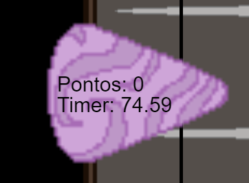

Ajude o Bardo
História do jogo:
O jogo se trata de um bardo que precisa a todo custo ganhar o coração de sua sogra, permitindo assim o seu casamento. Para tal precisamos ajudar o bardo a não se perder durante a musica.
O bardo demonstrado no jogo na verdade é um dos nossos colegas de classe, William, que por sua vez canta o hino do Brasil. Escolhemos ele pois acreditamos que seria justamente o que tiraria risos de todos da turma, professora inclusa. Isso se da pelo fato de William ser um aluno "popular" em nossa turma. Creio que não haja uma pessoa dentre todos que não considere ele carismatico, gentil e esforçado. Aqui temos uma pequena homenagem a esse amigo.
Jogabilidade
Aperte as teclas a tempo com as notas caindo, acerte e ganhe pontos, erre e perca-os
- Controle as teclas com "Q / W / E / R"
- Mantenha um combo de acertos para aumentar sua pontuação
- Não erre muitas vezes seguidas, senão sua pontuação vai se esvair 
Personagens do Jogo
- Bardo

"Eu acho que vi Deus" ~William.